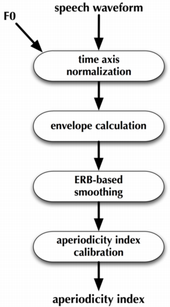
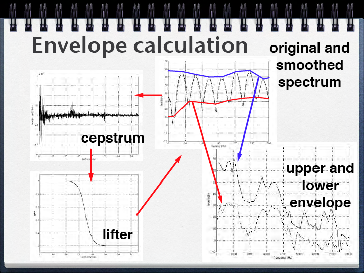
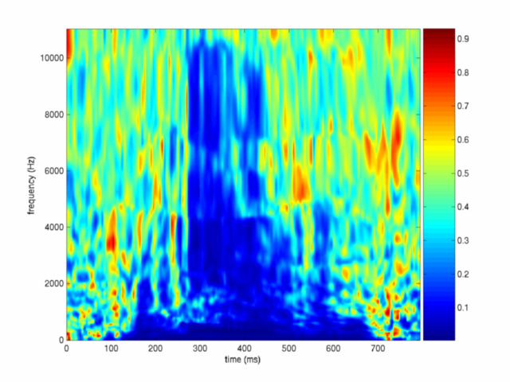
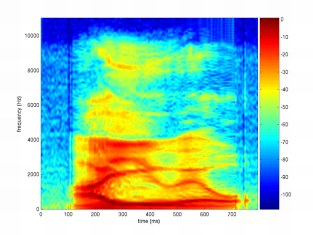

| 非周期性指標 | Contents | Index |
STRAIGHTにおける駆動音源の制御には二種類の手段が提供されています。 一つは、群遅延の制御であり，もう一つは非周期性指標を用いる方法です。 非周期性指標は，パルスと雑音の和として表される 駆動音源の全エネルギーに占める雑音（ランダム）成分のエネルギーを表します。 非周期性指標を求める全体の流れは，以下のようになります。

非周期性指標の推定の中心となる処理であるスペクトル包絡(envelope extraction)の 抽出について以下の図で説明します。 非周期性指標(ap)は，基本的には，スペクトルの上側包絡(Ue)と下側包絡(Le)との差として求められます。 (ap = Le-Ue)

こうして求められた素材としての推定値は，周波数方向に1ERBの分解能で平滑化されます。 （ERB: Equivalent Rectangular Band widthについては，聴覚心理などの教科書をご覧下さい） 参考までに，周波数(x)とERB(y)の関係を求めるMatlabのコードを以下に示します。
y = 21.4*log10(4.37e-3*x+1);
最後に，こうして求められた値を，較正用の表を用いて較正した値を求めます。 この較正用の表は，合成母音を用いたシミュレーションにより予め求めておきます。
imagesc([0 794],[0 fs/2],10.0.^(ap/20));axis('xy')
次の図に，男性の発声した母音系列/aiueo/から求められた非周期性指標を
上記の式で変換したものを示します。
非周期性指標自体は，dBにより表されています。 この値は，全エネルギーに占める雑音のエネルギーを表しているため， 0dBは駆動が完全にランダムであることを意味します。 この指標を-60dB以下に設定すると，駆動信号は 実質的にはパルスだけとなります。


以下に非周期性指標を操作する例を示します。 これは最後に添付した音声を作成した際の実際のMatlabセッションを記録したものです。
>> [x,fs,nbs,ops]=wavread('vaiueo2d.wav');
>> [f0raw,ap]=exstraightsource(x,fs);
>> n3sgram=exstraightspec(x(:,1),f0raw,fs);
>> syOrg = exstraightsynth(f0raw,n3sgram,ap,fs);
>> syApr = exstraightsynth(f0raw,n3sgram,ap*0,fs);
>> syPpr = exstraightsynth(f0raw,n3sgram,ap*0-60,fs);
>> [syPprD0,prmS] = exstraightsynth(f0raw,n3sgram,ap*0-60,fs);
>> prmS
prmS =
spectralUpdateInterval: 1
groupDelayStandardDeviation: 0.5000
groupDelaySpatialBandWidth: 70
groupDelayRandomizeCornerFrequency: 4000
ratioToFundamentalPeriod: 0.2000
ratioModeIndicator: 0
levelNormalizationIndicator: 1
headRoomToClip: 22
powerCheckSegmentLength: 15
timeAxisMappingTable: 1
fundamentalFrequencyMappingTable: 1
frequencyAxisMappingTable: 1
timeAxisStretchingFactor: 1
DisplayPlots: 0
lowestF0: 50
statusReport: 'ok'
>> prmS.groupDelayStandardDeviation = 0.001;
>> [syPprD0,prmS] = exstraightsynth(f0raw,n3sgram,ap*0-60,fs,prmS);
>> wavwrite(syOrg/32768,fs,16,'synAiueoOrg.wav');
>> wavwrite(syApr/32768,fs,16,'synAiueoApr.wav');
>> wavwrite(syPpr/32768,fs,16,'synAiueoPpr.wav');
>> wavwrite(syPprD0/32768,fs,16,'synAiueoPprD0.wav');
このセッションにより作成された音声を以下にリンクしておきます。
| 非周期性指標 | Contents | Index |